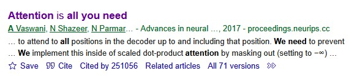
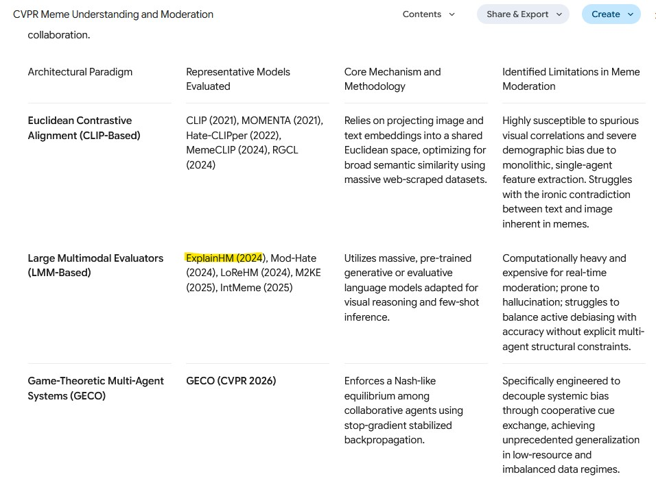

Day 3 — Literature Tools
[to be updated]
Day 3 is about the tools that turn a literature search into a bibliography you can trust: Zotero to collect and manage sources, Google Scholar to find and check them, and Deep Research as a fast but unreliable first map. By the end of the day, the team’s idea should rest on sources it has verified itself, and the poster should be started. The examples continue with the illustrative health misinformation brief from Day 1.
Schedule
All sessions are at NUS Innovation 4.0.
| Slot | Activity | Location |
|---|---|---|
| 1 hr | Literature tools tutorial | Lecture hall |
| — | Break | — |
| 2 hr | Research project: mentor consultation | Tutorial room |
Deliverable: continue to refine the solution or idea, and start the poster.
Daily Recap
Before searching, the team revisits its problem statement and splits the literature search across sub-areas. Without this split, three teammates can end up finding the same survey paper while a whole sub-area goes untouched.
For the Singlish health misinformation angle, one way to split it is:
| Sub-area | Why it matters to the problem |
|---|---|
| Misinformation / fake-news detection | The core task — what methods exist, what they achieve |
| Code-mixed and low-resource NLP | Directly addresses the Singlish constraint |
| Explainability in text classification | Addresses the explainability requirement from the brief |
Each member takes a sub-area, and the team agrees up front to come back with a handful of strong sources rather than a long, unsorted list.
Literature Tools Tutorial
Zotero
Zotero is a free, open-source reference manager. It is where the team’s sources live for the rest of the week, so everyone works from the same library instead of a scatter of PDFs and copied links.
- Install Zotero and the browser connector. The desktop app holds the library; the connector adds a button to your browser.
- Save with one click. On a Google Scholar result, an arXiv page or a publisher’s page, click the connector button and Zotero saves the item with its metadata and, where it can, the PDF.
- One collection per project. Make a collection for your EROP project and save everything into it, so the team’s library stays separate from anything else you read.
- Tags and notes. Tag each item with its sub-area (for example
code-mixed,explainability) and write your annotation as a note on the item. The notes become the annotated bibliography below. - Export to Overleaf. Export the collection as a
.bibfile and upload it to the team’s Overleaf project, then cite with\cite{key}as on Day 2. The Better BibTeX plugin is optional; it gives each item a stable citation key, so your\cite{}commands don’t break when you re-export. - Check each entry before trusting it. Zotero saves whatever metadata the page offers. If you save a paper from arXiv, you get an arXiv preprint entry even when the paper was later published at a conference. Check the venue and year of every item, and fix the entry to cite the published version.
Google Scholar
Google Scholar is where you find papers, check leads from any other source, and follow the citation trail yourself. The first step with any source that a tool or a survey suggests is the same: find the real paper. Search the exact title in Google Scholar and confirm that the authors, venue and year match what the tool claimed.
For exact keyword searching, put the title or phrase in double quotes, for example "Attention Is All You Need". Scholar then only returns results containing that exact phrase, which is the fastest way to find one specific paper. If the full title does not turn anything up, try a distinctive phrase from it in quotes.

Practical Tips!
- “Cited by N” — every result lists how many later papers cite it. Clicking through shows forward citations: newer work that built on this paper. This is the most useful way to get from a foundational paper to the current state of the art.
- “Related articles” — shows papers that Scholar judges to be topically similar, which helps to widen a sub-area. Connected Papers is another useful tool here: it draws a graph of papers related to one you give it.
- Cite → BibTeX — exports a citation for the bibliography (still check the venue and year).
- Filter by year (left sidebar) — restrict to recent work to see where a field is now, or sort differently to surface the seminal older papers.
- The right-hand link — often a
[PDF]from the publisher, arXiv, or an author’s page, which leads to the full text.
Citation count is a signal of influence, but it is biased toward older papers — a strong 2024 paper will not have many citations yet. So also weigh the venue (is it a recognised peer-reviewed conference or journal?), the recency, and above all the fit to your problem. A modestly cited paper that addresses your exact sub-problem is often worth more than a famous paper that is only loosely related.
Deep Research with LLMs
Deep Research features (in ChatGPT, Claude, Gemini, and similar tools) are useful for getting a fast first map of a field. Treat them as a starting point, never a substitute for reading. Always watch for two failure modes:
- Hallucinated or mis-attributed citations. A tool may invent a plausible-sounding paper, or credit a real finding to the wrong authors or venue. Verify every source independently before it goes into the bibliography.
- Confident but shallow synthesis. The summary can smooth over real disagreements in the literature, or miss the most important recent work. Read it as a set of leads to check rather than as settled conclusions.
A vague prompt (“tell me about misinformation detection”) returns a vague survey. A prompt works better when it encodes the problem statement, the constraints, and exactly what should be returned.
I am researching the detection of health misinformation in code-mixed English–Singlish short text (social media posts). I want to understand the existing research landscape.
Please find and summarise:
- Key approaches to health misinformation / fake-news detection in short text, with a focus on explainable methods.
- Work on code-mixed or low-resource NLP, especially for English mixed with Southeast Asian languages.
- For each work: the venue, the year, the core method, and its main limitation.
Prioritise peer-reviewed papers from reputable venues (e.g., ACL, EMNLP, NAACL, ICML, ICLR). Include links or DOIs so I can verify each source. Flag where the evidence is thin or where you are uncertain.
This prompt states the problem precisely, names the constraints (code-mixed, explainable, short text), asks for verifiable metadata (venue, year, link), and asks the tool to flag its own uncertainty.
Don’t trust the models (for now)
Below is an example of a hallucinated reference produced by Deep Research (02/Jun/2026).

Be very careful with the papers it lists. The model can hallucinate a paper that does not exist, and it can also get where a paper was published wrong. In other cases, the paper may only be on arXiv and not yet published. To be confident in our sources, we verify them ourselves.
Using your EROP problem statement, write a Deep Research prompt in the spirit of the one above. Run it, then triage the results into “read first / read soon / skim / filter out” as in the Day 1 reading tutorial. Save the sources you keep into your team’s Zotero collection.
Verifying Information
Before any source informs your proposal, confirm two things: that it exists as described, and that the claims attributed to it are true. Any source that cannot be found on Google Scholar stays out of the bibliography.
Not every source needs the same scrutiny. To prioritise, we ask two questions: how central is this source to our argument? and how much are we taking its claims on trust?
| Priority | Source type | Action |
|---|---|---|
| High | Papers central to the problem / candidate baselines | Verify and read critically |
| Medium | Supporting evidence for a specific claim | Verify existence and check the specific claim |
| Low | Background / context only | Confirm it exists; park for later |
Validating the claims
AI hallucination and misattribution take many forms. Below are some common ones to look out for:
- Incorrect venues — these hallucinations happen most frequently when you specify which venue (e.g., ICML) you want the AI to search from.
- Invented papers — a plausible title paired with real authors who never wrote it.
- Misattribution — a real finding credited to the wrong paper, or two papers’ results merged into one.
- Overstated claims — “this method solves X” when the paper reports a modest improvement under specific conditions.
- Dropped caveats — the dataset, language, or setting a result depends on is left out (e.g., an English-only result reported as if it were general).
- Fabricated numbers — precise-sounding statistics that don’t actually appear in the source.
An AI survey claims: “Tan et al. (2022) show that multilingual transformers achieve 92% F1 on code-mixed health misinformation.” Upon checking, Tan et al. evaluate on monolingual English misinformation and never touch code-mixed text; the 92% is on a different task entirely.
For each source on your team’s shortlist: (1) find it on Google Scholar and confirm authors/venue/year, (2) check and tidy its entry in Zotero (or better yet, find the original published source), and (3) write 2-3 points about it in your own words and compare them against the AI summary. Drop any source you can’t verify, and flag any claim that doesn’t hold up.
Synthesizing Findings
The goal at the end of the search is a small set of synthesised points that connect back to the problem statement, rather than a pile of PDFs. Three kinds are useful:
- Existing work — “Approach X is the standard method for short-text misinformation detection, achieving Y on benchmark Z.”
- A limitation or gap — “These models are trained and evaluated almost entirely on monolingual English; code-mixed performance is largely unstudied.”
- A convention of the subfield — “Explainability here is usually evaluated by attention-weight visualisation or token-attribution methods, which have known reliability caveats.”
Each point should trace back to a specific source, so the claim can be checked.
Annotated Bibliographies
The team keeps an annotated bibliography, with each annotation written as a Zotero note on its item. Useful annotations are short, but they record relevance and judgement as well as a summary:
Author(s) (Year). Title. Venue. [link/DOI]
- What it does: proposes a transformer-based classifier for short-text misinformation with token-level attribution for explainability.
- Why it’s relevant: hits two of our constraints (short text + explainability); a strong candidate baseline.
- Limitation for us: English-only; no evaluation on code-mixed text, which is exactly our gap.
- Follow-ups (via “Cited by”): two 2024 papers extend this to multilingual settings — worth reading next.
Take one source you flagged from your Deep Research survey. Find it on Google Scholar, confirm its venue and year, and click “Cited by” to find a more recent paper that builds on it. Save both to Zotero and write an annotated bibliography entry for each as a note, in the spirit of the one above. Then, as a team, pool everyone’s entries and pick out the three synthesised points most relevant to your problem statement.
Research Project: Refining and Starting the Poster
In the mentor session, the team keeps refining its idea against the literature it has now verified. Check whether the gap you found still stands, whether the research questions from Day 2 need tightening, and whether a paper you found today suggests a better baseline or dataset. Then start the poster, so that Day 4 is about finishing it rather than beginning it.
Starting the Poster
The poster is the visual pitch. We will build it in Canva at 91 cm (H) × 150 cm (W) and focus on a clear narrative rather than fitting in as much content as possible. Someone walking past should grasp the problem, the idea and the contribution in under a minute.
Try to include: a one-line problem statement, the gap, the research question, a simple figure of the approach, and the expected contribution. It is usually not a good idea to copy and paste the entire proposal into the poster. The poster supports a conversation (like a notecard); it is not the whole conversation.
Draft a poster layout that tells your research story in five blocks: Problem → Gap → Research Question → Approach (with a figure) → Expected Contribution. Keep the text minimal and let one central figure carry the method.
For poster design, two good resources are this guide from NYU and this blog. Day 4 shows finished example posters.
Checkpoint Deliverable: Day 3
At the end of Day 3, the team should have:
- a Zotero collection of verified sources, exported as a
.bibfile that compiles in the team’s Overleaf project; - an annotated shortlist, with the annotations as Zotero notes;
- a refined idea, checked against the verified literature;
- a poster in Canva with the five blocks laid out.